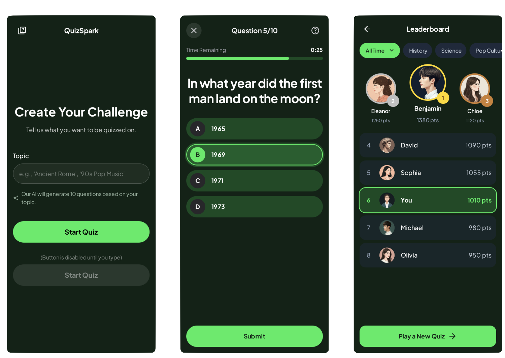

In this Codelab, you'll build Quiz Spark, a fully functional Android application that uses the Gemini API to generate quizzes on any topic a user enters. You'll also use Firebase Firestore to store and display a live leaderboard.

This Codelab is designed for those who have some basic experience with Android development but are new to generative AI with Gemini or backend services with Firebase. We'll explain every concept step-by-step.
You'll build a complete Android app with three main screens:
Before we start coding, we need to set up our Firebase backend. Quiz Spark uses two Firebase services:
In your new project's Project Overview, click on + Add app and then select the Android icon to launch the setup wizard.
Enter your application's package name. You can find this in your app/build.gradle.kts file (it's com.cmota.quizspark for this project).
Download the google-services.json file and place it in your app's module (app-level) directory (usually app/).
Follow the wizard's instructions to add the Firebase SDKs (Bill of Materials) to your build.gradle.kts files.
Open your app/build.gradle.kts file and ensure you have the following dependencies added. These are the key libraries for our project.
// Firebase Bill of Materials (BoM)
implementation(platform("com.google.firebase:firebase-bom:33.1.1"))
// Firebase AI (for Gemini)
implementation("com.google.firebase:firebase-ai")
// Firebase Firestore (for Leaderboard)
implementation("com.google.firebase:firebase-firestore")
// Kotlinx Serialization for parsing JSON from Gemini
implementation("org.jetbrains.kotlinx:kotlinx-serialization-json:1.7.0")
With our backend ready, let's start building the app!
A good app starts with a clear data structure. We have two main data models: Question and User.
This defines the structure for a single quiz question. We'll tell the Gemini API to provide its response in this exact format. The @Serializable annotation is from the Kotlinx Serialization library, which will help us parse the JSON response from Gemini easily.
Create the file java/com/cmota/quizspark/model/Question.kt:
package com.cmota.quizspark.model
import kotlinx.serialization.Serializable
@Serializable
data class Question(
val question: String = "",
val options: List<String> = emptyList(),
val correct: Int = 0
)
This defines the data we'll store in our Firestore leaderboard for each user. @DocumentId tells Firestore to automatically populate the uid field with the document's unique ID.
Create the file java/com/cmota/quizspark/model/User.kt:
package com.cmota.quizspark.model
import com.google.firebase.firestore.DocumentId
data class User(
@DocumentId val uid: String? = null,
val username: String = "",
val score: Long = 0L
)
Before building screens, let's set up our app's visual style (Theme) and how we move between screens (Navigation).
Our theme files define the app's look and feel, including colors and typography. This project uses a dark, "spark" theme.
java/com/cmota/quizspark/ui/theme/Color.ktdarkGreenBackground and brightGreen.java/com.cmota/quizspark/ui/theme/Type.ktjava/com/cmota/quizspark/ui/theme/Theme.ktQuizSparkTheme composable, which wraps our entire application.We use navigation library 3.
Create java/com/cmota/quizspark/ui/navigation/NavigationRoutes.kt:
package com.cmota.quizspark.ui.navigation
import androidx.navigation3.runtime.NavKey
import kotlinx.serialization.Serializable
@Serializable
data object Intro: NavKey
@Serializable
data object Quiz: NavKey
@Serializable
data object Leaderboard: NavKey
MainNavigation.kt, is the app's "scaffolding." It defines which screen is shown and how to transition between them. It also initializes and passes our ViewModels to the correct screens.Create java/com/cmota/quizspark/ui/navigation/MainNavigation.kt:
package com.cmota.quizspark.ui.navigation
import androidx.compose.runtime.Composable
import androidx.navigation3.runtime.entryProvider
import androidx.navigation3.runtime.rememberNavBackStack
import androidx.navigation3.ui.NavDisplay
import com.cmota.quizspark.ui.leaderboard.LeaderboardViewModel
import com.cmota.quizspark.ui.questions.QuestionsViewModel
import com.cmota.quizspark.ui.screens.IntroScreen
import com.cmota.quizspark.ui.screens.LeaderboardScreen
import com.cmota.quizspark.ui.screens.QuizScreen
@Composable
fun MainNavigation(
questionsViewModel: QuestionsViewModel,
leaderboardViewModel: LeaderboardViewModel
) {
// Start the app with the Intro screen
val backStack = rememberNavBackStack(Intro)
NavDisplay(
backStack = backStack,
onBack = { backStack.removeLastOrNull() },
entryProvider = entryProvider {
entry<Intro> {
IntroScreen(
navigateToQuiz = { topic ->
backStack.add(Quiz)
questionsViewModel.generateQuiz(topic)
}
)
}
entry<Quiz> {
QuizScreen(
questionsViewModel = questionsViewModel,
leaderboardViewModel = leaderboardViewModel,
navigateToHome = { backStack.remove(Quiz) },
navigateToLeaderboard = { backStack.add(Leaderboard) }
)
}
entry<Leaderboard> {
leaderboardViewModel.fetchLeaderboard()
LeaderboardScreen(
leaderboardViewModel = leaderboardViewModel,
navigateToHome = {
backStack.remove(Leaderboard)
backStack.remove(Quiz)
}
)
}
}
)
}
MainActivity.kt is the app's entry point. It sets up our QuizSparkTheme and calls MainNavigation, injecting our ViewModels.From java/com/cmota/quizspark/MainActivity.kt:
package com.cmota.quizspark
// ... imports
import androidx.activity.viewModels
import com.cmota.quizspark.ui.leaderboard.LeaderboardViewModel
import com.cmota.quizspark.ui.navigation.MainNavigation
import com.cmota.quizspark.ui.questions.QuestionsViewModel
import com.cmota.quizspark.ui.theme.QuizSparkTheme
class MainActivity : ComponentActivity() {
private val questionsViewModel: QuestionsViewModel by viewModels()
private val leaderboardViewModel: LeaderboardViewModel by viewModels()
override fun onCreate(savedInstanceState: Bundle?) {
super.onCreate(savedInstanceState)
enableEdgeToEdge()
setContent {
QuizSparkTheme {
MainNavigation(
questionsViewModel = questionsViewModel,
leaderboardViewModel = leaderboardViewModel
)
}
}
}
}
This is our simplest screen. It's composed of a text field and a button.
Create java/com/cmota/quizspark/ui/screens/IntroScreen.kt.
The UI is built with standard Jetpack Compose composables like Column, Text, OutlinedTextField, and Button.
The two most important parts are:
remember { mutableStateOf("") } to hold the text the user types into the text field.val topic = remember { mutableStateOf("") }
OutlinedTextField(
value = topic.value,
onValueChange = { topic.value = it },
// ...
)
MapsToQuiz lambda function that was passed in from MainNavigation. This triggers the navigation to the QuizScreen. We also pass the topic.value (the text from the text field) to it.Button(
onClick = { navigateToQuiz(topic.value) },
// ...
enabled = topic.value.isNotEmpty()
) {
Text(
text = stringResource(R.string.intro_start),
// ...
)
}
This is the heart of the application. We'll use a ViewModel to handle the logic of calling the Gemini API and parsing its response.
First, we need a way to represent the different states of our quiz screen: Is it loading? Did it succeed? Did it fail? A sealed interface is perfect for this.
Create java/com/cmota/quizspark/ui/questions/UiState.kt:
package com.cmota.quizspark.ui.questions
import com.cmota.quizspark.model.Question
sealed interface UiState {
data object Initial : UiState
data object Loading : UiState
data class Success(val questions: List<Question>) : UiState
data class Error(val message: String) : UiState
}
This is where the magic happens. This class is responsible for all the logic related to the quiz.
Create java/com/cmota/quizspark/ui/questions/QuestionsViewModel.kt.
Let's break it down.
This is a critical concept. We give the Gemini API a "system instruction" that tells it how to behave. We instruct it to be a quiz assistant and, most importantly, to only respond with a valid JSON array matching our `Question data model.
private const val QUESTIONS = 10
// ...
private val systemInstruction = """
You are a quiz generation assistant.
Your response MUST be a single, valid JSON array.
The array must contain exactly $QUESTIONS JSON objects.
Do not add any other text, explanation, or markdown formatting around the JSON.
Each JSON object in the array must match this exact structure:
{
"question": "The question text as a string.",
"options": "A list of 4 strings for the answers.",
"correct": "The 0-based index (integer) of the correct answer."
}
"""
Here, we initialize the generativeModel.
Firebase.ai(backend = GenerativeBackend.googleAI()) to get the service.systemInstruction.responseMimeType = "application/json". This, combined with our system instruction, enables JSON mode, ensuring the API's output is only the JSON we asked for.private val generationConfig = generationConfig {
responseMimeType = "application/json"
}
private val generativeModel by lazy {
Firebase.ai(backend = GenerativeBackend.googleAI())
.generativeModel(
modelName = "gemini-2.5-flash-lite",
generationConfig = generationConfig,
systemInstruction = content {
text(systemInstruction)
}
)
}
private val jsonParser = Json { ignoreUnknownKeys = true }
The generateQuiz function is called from our MainNavigation when the user clicks "Start".
Loading.generativeModel.generateContent(prompt).response.text will be a clean JSON string.jsonParser.decodeFromString to turn that string into a List.Success, passing in the list of questions.fun generateQuiz(topic: String) {
viewModelScope.launch {
try {
answered.clear()
_questions.value = UiState.Loading
val prompt = "Generate $QUESTIONS question about $topic."
val response = generativeModel.generateContent(prompt)
val questions = jsonParser.decodeFromString<List<Question>>(response.text ?: "")
_question.value = questions.first()
_questions.value = UiState.Success(questions)
_indexLast.value = questions.size
_indexCurrent.value = 1
} catch (e: Exception) {
Log.d(TAG, "Error: ${e.message}")
_questions.value = UiState.Error(e.message ?: "An unknown error occurred")
}
}
}
The answerQuestion and score functions handle the quiz logic, like moving to the next question and counting the correct answers at the end.
Now that our QuestionsViewModel can generate quizzes, let's build the UI to display them.
Create java/com/cmota/quizspark/ui/screens/QuizScreen.kt.
This screen observes the state from the QuestionsViewModel.
We collect the UiState from the ViewModel. Compose will automatically "recompose" (re-draw) the UI whenever this state changes.
@Composable
fun QuizScreen(
// ...
) {
val question = questionsViewModel.question.collectAsState()
val questions = questionsViewModel.questions.collectAsState()
// ...
val selectedOption = remember { mutableStateOf<Int?>(null) }
// ...
QuizContent(
modifier = Modifier.padding(innerPadding),
question = question.value,
questions = questions.value,
selectedOption = selectedOption
)
// ...
}
The QuizContent composable uses a when block to decide what to show based on the UiState:
Initial / Loading: Show a QuizContentLoading composable (a progress bar).Success: Show the QuizContentSuccess composable with the actual question.Error: Show a QuizContentError message.@Composable
private fun QuizContent(
modifier: Modifier,
question: Question,
questions: UiState, // The UiState
selectedOption: MutableState<Int?>
) {
Column(
// ...
) {
when(questions) {
is UiState.Initial,
is UiState.Loading -> QuizContentLoading()
is UiState.Success -> QuizContentSuccess(
question = question,
selectedOption = selectedOption
)
is UiState.Error -> QuizContentError()
}
}
}
The QuizContentSuccess composable displays the question text and loops through the question.options, creating a QuizOption row for each one.
When the user finishes the last question, the "Next" button becomes a "Submit" button. This shows an AlertDialog (UsernameDialog) asking for their name before saving the score.
This logic is all in the Scaffold's bottomBar.
When the user submits their score, we need to save it to our Firebase Firestore database. This logic lives in the LeaderboardViewModel.
Just like with the quiz, we create a UiState for our leaderboard.
Create java/com/cmota/quizspark/ui/leaderboard/UiState.kt:
package com.cmota.quizspark.ui.leaderboard
import com.cmota.quizspark.model.User
sealed interface UiState {
data object Initial : UiState
data object Loading : UiState
data class Success(val users: List<User>) : UiState
data class Error(val message: String) : UiState
}
Create java/com/cmota/quizspark/ui/leaderboard/LeaderboardViewModel.kt.
This ViewModel has two main jobs: saving points and fetching the leaderboard.
savePoints function is called from QuizScreen when the user submits their name from the dialog.mapOf entry that matches our User model (username, score, and a server timestamp).Firebase.firestore.collection("leaderboard").add(entry) to add a new document to our "leaderboard" collection. Firestore handles the rest.fun savePoints(username: String, correct: Int) {
val score = correct * 10
val db = Firebase.firestore
val entry = mapOf(
"username" to username,
"score" to score,
"timestamp" to FieldValue.serverTimestamp()
)
db.collection("leaderboard").add(entry)
}
MainNavigation just before the LeaderboardScreen is displayed.Loading..get().await() to fetch the data..toObjects(User::class.java) function to automatically convert the Firestore documents into our User data class.Success with the list of users.fun fetchLeaderboard() {
viewModelScope.launch {
_leaderboard.value = UiState.Loading
try {
val query = Firebase.firestore
.collection("leaderboard")
.orderBy("score", Query.Direction.DESCENDING)
val snapshot = query.get().await()
val leaderboardList = snapshot.toObjects(User::class.java)
_leaderboard.value = UiState.Success(leaderboardList)
} catch (e: Exception) {
Log.d(TAG, "Error: ${e.message}")
_leaderboard.value = UiState.Error(e.message ?: "Unknown error")
}
}
}
This is our final screen. It's very similar to the QuizScreen in that it just observes the UiState from its ViewModel.
Create java/com/cmota/quizspark/ui/screens/LeaderboardScreen.kt.
Like the quiz screen, it collects the UiState from the LeaderboardViewModel and uses a when block to display the correct content.
@Composable
fun LeaderboardScreen(
leaderboardViewModel: LeaderboardViewModel,
navigateToHome: () -> Unit
) {
// 1. Collect the state
val leaderboard = leaderboardViewModel.leaderboard.collectAsState()
Scaffold(...) { innerPadding ->
LeaderboardContent(
modifier = Modifier.padding(innerPadding),
// 2. Pass the state to the content
leaderboard = leaderboard.value
)
}
}
@Composable
private fun LeaderboardContent(
modifier: Modifier,
leaderboard: UiState
) {
Column(...) {
// 3. Use a 'when' block to display the right UI
when (leaderboard) {
is UiState.Initial,
is UiState.Loading -> LeaderboardLoading()
is UiState.Success -> LeaderboardSuccess(leaderboard.users)
is UiState.Error -> LeaderboardError()
}
}
}
The LeaderboardSuccess function simply uses a LazyColumn (a vertically scrolling list) to display a LeaderboardUser row for each user in the list.
Congratulations!
You've successfully built a complete AI-powered Android application!
You learned how to: